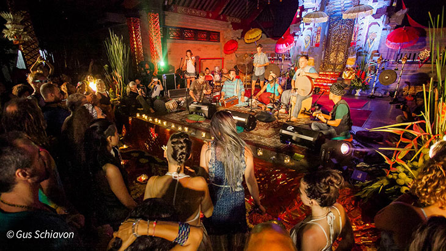

Bali Spirit Festival 2018 Bidik Wisman yang Hobinya Yoga
“Festival ini bukan hanya memberikan kegembiraan. Ada transfer ilmu pengetahuan di dalamnya. Kami memberikan sedikitnya 150 kelas seminar bagi para wisatawan. Mereka bisa mendapatkan pengetahuan tentang banyak hal,” ungkap Media Sponsorship Manager Bali Spirit Festival, Noviana Kusumawardhani, Selasa (27/3).
Meski demikian, beragam hiburan tetap disajikan dalam Bali Spirit Festival 2018. Ada beragam musisi yang siap unjuk skill. Bagi yang ingin menikmati suasana meriah bisa berkunjung ke pasar malam yang ramah lingkungan. Yang ingin mengenal lebih detail budaya Bali, bisa belajar tarian tradisional Pulau Dewata. Alternatif lainnya, mempelajari gamelan khas Bali.
“Kami akan gelar semuanya dengan lebih meriah. Tahun ini dijamin akan lebih berkesan. Sebab, kami juga ada kelas sufism. Kelas ini sebelumnya tidak ada. Jadi, yang jelas jangan sampai melewatkan festival ini karena semua yang disajikan sarat pengetahuan,” terang Noviana.
Bali Spirit Festival 2018 ini memang spesial. Sebab, 8.000 wisatawan dari 50 negara menjadi target acara. Ada Korea Selatan, Australia, dan Amerika Serikat. Selain itu datang juga dari Inggris, Prancis, Venezuela, hingga Jamaika.
Khusus yoga, Noviana menambahkan, Bali Spirit Festival menghadirkan banyak kelas. Nantinya, yoga juga disesuaikan berdasarkan tingkatan.
“Kami akan memberikan delapan kelas yoga. Para wisatan bisa memilih sesuai dengan keinginan mereka. Kelas ini berlaku untuk semua kalangan bahkan juga usia,” jelasnya.
Delapan kelas yoga yang disediakan adalah jivamukti, kundalini, hatha, dan vinasa flow. Ada juga afro flow, yoga ketawa, astanga, hingga yoga anak.
“Jadi saat wisatawan berada di sini mereka bisa menikmatinya bersama seluruh keluarga. Anak-anak juga bisa ikutan beryoga akan semakin fesh. Yang jelas festival ini sangat hangat terhadap seluruh keluarga,” terang Noviana.
Mengusung tema 'Kembali ke Akar', festival ini juga fokus terhadap terapi. Beberapa proses penyembuhan yang ditawarkan adalah treatment mengembalikan suara. Wisatawan juga akan diajak untuk bermeditasi.